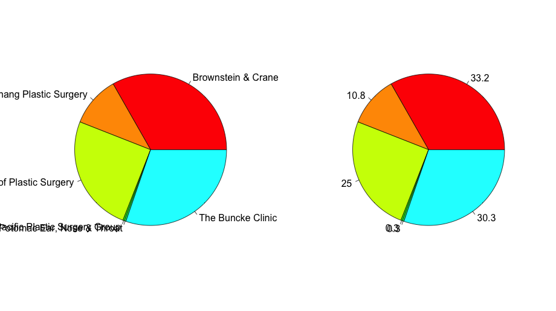
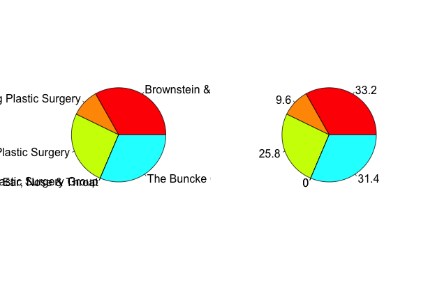
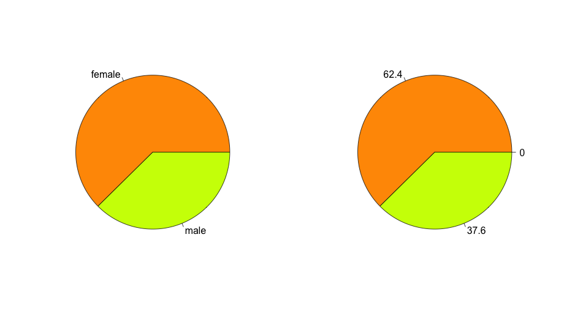
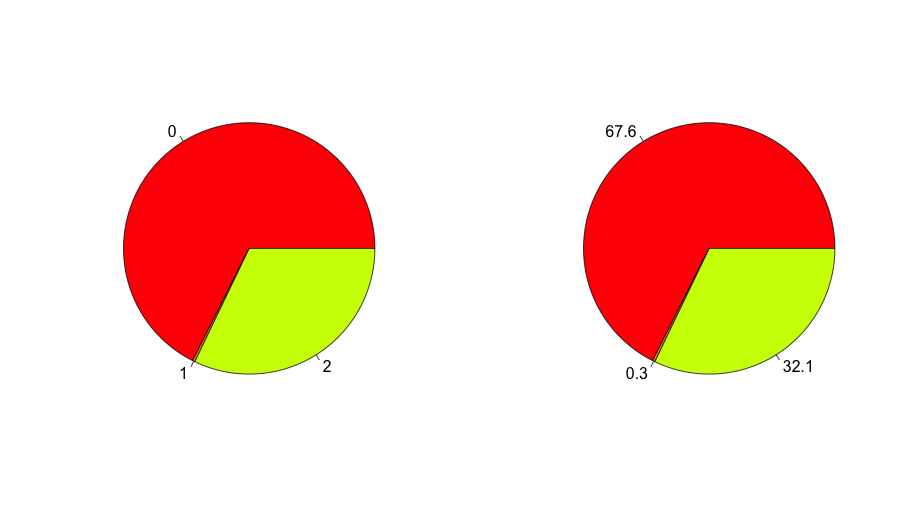

--------- Time lag between sending and claiming invite
(L: all ; R: time lag only in first hr)

--------- Time lag between sending and claiming invite, cumulative
(L: all ; R: time lag only in first hr)

--------- Which clinic sent invites
(L: name ; R: percentage )

--------- Which clinic sent invites including only claimed invites
(L: name ; R: percentage )

--------- Which clinic sent invites, only including ones sent POST-Sept 1
(L: name ; R: percentage )

--------- Which clinic sent invites, only including ones sent PRE-Sept 1
(L: name ; R: percentage )

--------- Sent invites broken down by gender
(L: gender ; R: percentage )

--------- Sent invites broken down by type of invite
(L: type: 0 = Famtree, 1 = Admin, 2 = Intake ; R: percentage )
